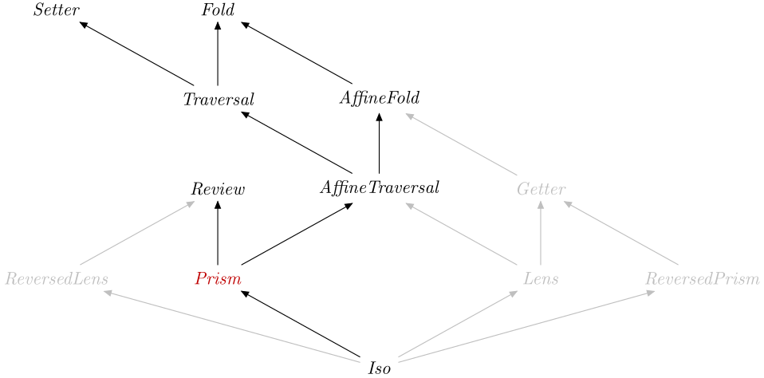

| Safe Haskell | Safe-Inferred |
|---|---|
| Language | Haskell2010 |
Optics.Prism
Description
Synopsis
- type Prism s t a b = Optic A_Prism NoIx s t a b
- type Prism' s a = Optic' A_Prism NoIx s a
- prism :: (b -> t) -> (s -> Either t a) -> Prism s t a b
- prism' :: (b -> s) -> (s -> Maybe a) -> Prism s s a b
- only :: Eq a => a -> Prism' a ()
- nearly :: a -> (a -> Bool) -> Prism' a ()
- withPrism :: Is k A_Prism => Optic k is s t a b -> ((b -> t) -> (s -> Either t a) -> r) -> r
- aside :: Is k A_Prism => Optic k is s t a b -> Prism (e, s) (e, t) (e, a) (e, b)
- without :: (Is k A_Prism, Is l A_Prism) => Optic k is s t a b -> Optic l is u v c d -> Prism (Either s u) (Either t v) (Either a c) (Either b d)
- below :: (Is k A_Prism, Traversable f) => Optic' k is s a -> Prism' (f s) (f a)
- data A_Prism :: OpticKind
Formation
Introduction
prism :: (b -> t) -> (s -> Either t a) -> Prism s t a b Source #
Build a prism from a constructor and a matcher, which must respect the well-formedness laws.
If you want to build a Prism from the van Laarhoven representation, use
prismVL from the optics-vl package.
Elimination
A Prism is in particular an AffineFold,
an AffineTraversal, a
Review and a Setter, therefore you can
specialise types to obtain:
preview::Prism's a -> s -> Maybe areview::Prism's a -> a -> s
over::Prisms t a b -> (a -> b) -> s -> tset::Prisms t a b -> b -> s -> tmatching::Prisms t a b -> s -> Either t a
If you want to preview a type-modifying Prism that is
insufficiently polymorphic to be used as a type-preserving Prism', use
getting:
preview.getting::Prisms t a b -> s ->Maybea
Computation
Well-formedness
Additional introduction forms
See Data.Maybe.Optics and Data.Either.Optics for Prisms for the
corresponding types, and _Cons, _Snoc
and _Empty for Prisms for container types.
nearly :: a -> (a -> Bool) -> Prism' a () Source #
This Prism compares for approximate equality with a given value and a
predicate for testing, an example where the value is the empty list and the
predicate checks that a list is empty (same as _Empty with the
AsEmpty list instance):
>>>nearly [] null # ()[]>>>[1,2,3,4] ^? nearly [] nullNothing
nearly[]null::Prism'[a] ()
To comply with the Prism laws the arguments you supply to nearly a p are
somewhat constrained.
We assume p x holds iff x ≡ a. Under that assumption then this is a valid
Prism.
This is useful when working with a type where you can test equality for only a subset of its values, and the prism selects such a value.
Additional elimination forms
withPrism :: Is k A_Prism => Optic k is s t a b -> ((b -> t) -> (s -> Either t a) -> r) -> r Source #
Work with a Prism as a constructor and a matcher.
Combinators
aside :: Is k A_Prism => Optic k is s t a b -> Prism (e, s) (e, t) (e, a) (e, b) Source #
Use a Prism to work over part of a structure.
without :: (Is k A_Prism, Is l A_Prism) => Optic k is s t a b -> Optic l is u v c d -> Prism (Either s u) (Either t v) (Either a c) (Either b d) Source #
below :: (Is k A_Prism, Traversable f) => Optic' k is s a -> Prism' (f s) (f a) Source #
Lift a Prism through a Traversable functor, giving a Prism that
matches only if all the elements of the container match the Prism.
Subtyping
data A_Prism :: OpticKind Source #
Tag for a prism.
Instances
